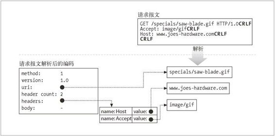

5.5 第二步——接收请求报文
连接上有数据到达时，Web 服务器会从网络连接中读取数据，并将请求报文中的内容解析出来（参见图 5-5）。
图 5-5 从连接中读取请求报文
解析请求报文时，Web 服务器会：
解析请求行，查找请求方法、指定的资源标识符（URI）以及版本号，1 各项之 间由一个空格分隔，并以一个回车换行（CRLF）序列作为行的结束；2
1 HTTP 的初始版本 HTTP/0.9 并不支持版本号。有些 Web 服务器也支持没有版本号的情况，会将报文作为 HTTP/0.9 请求进行解析。
2 很多客户端会错误地将 LF 作为行结束的终止符发送，所以很多 Web 服务器都支持将 LF 或 CRLF 作为行结束序列使用。
读取以 CRLF 结尾的报文首部；
检测到以 CRLF 结尾的、标识首部结束的空行（如果有的话）；
如果有的话（长度由 Content-Length 首部指定），读取请求主体。
解析请求报文时，Web 服务器会不定期地从网络上接收输入数据。网络连接可能随时都会出现延迟。Web 服务器需要从网络中读取数据，将部分报文数据临时存储在内存中，直到收到足以进行解析的数据并理解其意义为止。
5.5.1 报文的内部表示法
有些 Web 服务器还会用便于进行报文操作的内部数据结构来存储请求报文。比如，数据结构中可能包含有指向请求报文中各个片段的指针及其长度，这样就可以将这些首部存放在一个快速查询表中，以便快速访问特定首部的具体值了（参见图 5-6）。

图 5-6 将请求报文解析为便捷的内部表示形式
5.5.2 连接的输入/输出处理结构
高性能的 Web 服务器能够同时支持数千条连接。这些连接使得服务器可以与世界各地的客户端进行通信，每个客户端都向服务器打开了一条或多条连接。某些连接可能在快速地向 Web 服务器发送请求，而其他一些连接则可能在慢慢发送，或者不经常发送请求，还有一些可能是空闲的，安静地等待着将来可能出现的动作。
因为请求可能会在任意时刻到达，所以 Web 服务器会不停地观察有无新的 Web 请求。不同的 Web 服务器结构会以不同的方式为请求服务，如图 5-7 所示。
图 5-7 Web 服务器输入 / 输出结构
单线程 Web 服务器（参见图 5-7a）
单线程的 Web 服务器一次只处理一个请求，直到其完成为止。一个事务处理结束之后，才去处理下一条连接。这种结构易于实现，但在处理过程中，所有其他连接都会被忽略。这样会造成严重的性能问题，只适用于低负荷的服务器，以及 type-o-serve 这样的诊断工具。
多进程及多线程 Web 服务器（参见图 5-7b）
多进程和多线程 Web 服务器用多个进程，或更高效的线程同时对请求进行处理。3 可以根据需要创建，或者预先创建一些线程 / 进程。4 有些服务器会为每条连接 分配一个线程 / 进程，但当服务器同时要处理成百、上千，甚至数以万计的连接 时，需要的进程或线程数量可能会消耗太多的内存或系统资源。因此，很多多线 程 Web 服务器都会对线程 / 进程的最大数量进行限制。
3 进程是一个独立的程序控制流，有自己的变量集。线程是一种更快、更高效的进程版本。单个程序可 以通过线程和进程同时处理多件事情。为了便于解释，我们将线程和进程当作是可以互换的概念。但由于性能的不同，很多高性能服务器既是多进程的，又是多线程的。
4 会预先创建一些线程的系统被称为“工作池”系统，因为池中会有一组线程在等待工作。
复用 I/O 的服务器（参见图 5-7c）
为了支持大量的连接，很多 Web 服务器都采用了复用结构。在复用结构中，要同时监视所有连接上的活动。当连接的状态发生变化时（比如，有数据可用，或出现错误时），就对那条连接进行少量的处理；处理结束之后，将连接返回到开放连接列表中，等待下一次状态变化。只有在有事情可做时才会对连接进行处理；在空闲连接上等待的时候并不会绑定线程和进程。
复用的多线程 Web 服务器（参见图 5-7d）
有些系统会将多线程和复用功能结合在一起，以利用计算机平台上的多个 CPU。多个线程（通常是一个物理处理器）中的每一个都在观察打开的连接（或打开的连接中的一个子集），并对每条连接执行少量的任务。